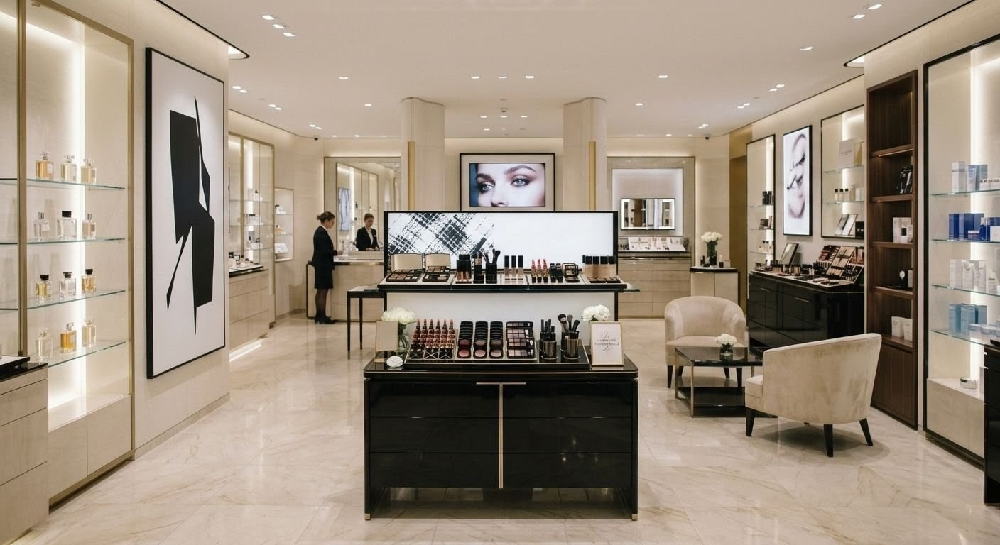

En cuestión de segundos, su cerebro interpreta la iluminación, el orden, los colores, la distribución del espacio y la forma en que los productos están exhibidos. Estos estímulos influyen en cómo percibe la marca, qué recorrido realiza dentro de la tienda y, en muchos casos, en su decisión de compra.
Eso es precisamente lo que estudia el Visual Merchandising.
Lejos de ser únicamente una cuestión estética, el visual merchandising es una disciplina estratégica que combina diseño, comportamiento del consumidor y comunicación visual para crear espacios que faciliten la compra y fortalezcan la identidad de una marca.
¿Qué es el Visual Merchandising?
El Visual Merchandising es la disciplina que planifica y organiza la presentación visual de los productos dentro de un espacio comercial para mejorar la experiencia del cliente y favorecer el desempeño comercial.
Su propósito no es decorar una tienda, su objetivo es comunicar, orientar, destacar productos y facilitar la decisión de compra.
De acuerdo con el Retail Design Institute, el diseño del entorno comercial influye directamente en la manera en que las personas interactúan con una marca y experimentan el proceso de compra.
En otras palabras, el visual merchandising convierte el espacio físico en un canal de comunicación.
Mucho más que acomodar productos
Uno de los errores más comunes es pensar que el visual merchandising consiste únicamente en organizar estantes o hacer que una tienda se vea atractiva.
En realidad, detrás de cada exhibición existe una estrategia.
Cada decisión responde a preguntas como:
- ¿Qué producto queremos destacar?
- ¿Qué recorrido queremos que siga el cliente?
- ¿Dónde debe detenerse?
- ¿Qué productos pueden generar compras complementarias?
- ¿Qué queremos que recuerde de la marca al salir?
El objetivo es reducir la fricción durante la compra y facilitar que el cliente descubra productos de manera natural.
¿Cómo influye en la decisión de compra?
Las decisiones de compra rara vez son completamente racionales.
Diversas investigaciones en psicología del consumidor y comportamiento de compra muestran que el entorno físico influye en aspectos como la atención, la percepción de calidad, el tiempo de permanencia y la intención de compra.
Autores como Why We Buy han documentado cómo pequeños cambios en el diseño de una tienda pueden modificar la forma en que los consumidores recorren un espacio e interactúan con los productos.
Aunque ningún diseño garantiza por sí solo un incremento en las ventas, sí puede crear condiciones que favorezcan una mejor experiencia y un proceso de compra más intuitivo.
Los pilares del Visual Merchandising
1. Jerarquía visual
No todos los productos tienen la misma importancia.
Una exhibición efectiva establece prioridades y dirige la atención hacia los productos estratégicos.
2. Exhibición de producto
La forma en que un producto se presenta influye en su valor percibido.
Una exhibición clara, ordenada y bien iluminada facilita la exploración y mejora la experiencia de compra.
3. Recorrido del cliente
El diseño del espacio define cómo se mueve una persona dentro de la tienda.
Una circulación intuitiva favorece el descubrimiento de productos y mejora la experiencia general.
4. Identidad de marca
Cada elemento del espacio comunica.
Materiales, iluminación, colores y mobiliario deben transmitir una identidad coherente con la marca.
5. Experiencia
Hoy las personas no buscan únicamente comprar.
Buscan espacios que inspiren, sorprendan y generen una conexión emocional con la marca.
Por ello, el visual merchandising ha evolucionado de la simple exhibición de productos hacia el diseño de experiencias.
Errores frecuentes en Visual Merchandising
Muchas empresas invierten en remodelar sus espacios, pero pasan por alto aspectos fundamentales que afectan la experiencia del cliente.
Algunos de los errores más comunes son:
- Saturar la exhibición con demasiados productos.
- No establecer un punto focal claro.
- Descuidar la iluminación.
- Cambiar constantemente la organización sin una estrategia.
- No actualizar las exhibiciones según temporadas o campañas.
- Priorizar la estética sobre la funcionalidad.
- Diseñar pensando en el negocio y no en el comportamiento del cliente.
¿Cuándo debería una empresa invertir en Visual Merchandising?
El visual merchandising no es exclusivo de grandes cadenas de retail.
Puede aportar valor cuando:
- Se inaugura una nueva tienda.
- Se realiza una remodelación.
- Disminuyen las ventas sin una causa evidente.
- Se lanza una nueva colección o línea de productos.
- La marca busca mejorar la experiencia del cliente.
- Se quiere reforzar el posicionamiento frente a la competencia.
El futuro del Visual Merchandising
Las tiendas físicas han dejado de ser únicamente puntos de venta.
Hoy son espacios donde las marcas construyen relaciones, generan confianza y ofrecen experiencias que el comercio electrónico difícilmente puede replicar.
Por ello, el visual merchandising seguirá evolucionando hacia propuestas más dinámicas, personalizadas y centradas en el comportamiento del consumidor, integrando herramientas digitales, análisis de datos y experiencias inmersivas.
Conclusión
El visual merchandising no consiste en hacer que una tienda se vea bonita.
Consiste en diseñar un entorno que comunique, oriente y facilite la decisión de compra.
Cuando la exhibición de producto, el diseño del espacio y la experiencia del cliente trabajan de forma integrada, el punto de venta deja de ser un simple lugar de transacción y se convierte en una herramienta estratégica para fortalecer la marca y potenciar su desempeño comercial.
En un mercado cada vez más competitivo, el diseño ya no es únicamente una cuestión estética; es una ventaja competitiva.
